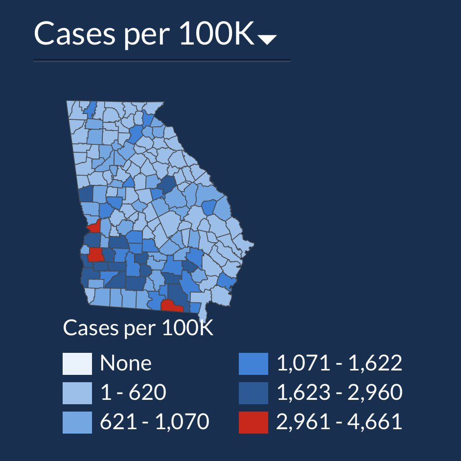

shup2 <-- "Hello to you!"Clicker Questions for DS2 - Foundations of Data Science
to go along with
Modern Data Science with R, 3rd edition by Baumer, Kaplan, and Horton
R for Data Science, 2nd edition by Wickham, Çetinkaya-Rundel, and Grolemund
- R / R Studio / Quarto1
- all good
- started, progress is slow and steady
- started, very stuck
- haven’t started yet
- what do you mean by “R”?
- Git / GitHub2
- all good
- started, progress is slow and steady
- started, very stuck
- haven’t started yet
- what do you mean by “Git”?
- Where can I get feedback on my HW assignments / quizzes?3
- prof will return paper versions
- on Gradescope
- on Canvas
- on GitHub
- Which of the following includes talking to the remote version of GitHub?4
- changing your name (updating the YAML)
- committing the file(s)
- pushing the file(s)
- some of the above
- all of the above
- What is the error?5
- poor assignment operator
- unmatched quotes
- improper syntax for function argument
- invalid object name
- no mistake
- What is the error?6
- poor assignment operator
- unmatched quotes
- improper syntax for function argument
- invalid object name
- no mistake
3shup <- "Hello to you!"- What is the error?7
- poor assignment operator
- unmatched quotes
- improper syntax for function argument
- invalid object name
- no mistake
shup4 <- "Hello to you!- What is the error?8
- poor assignment operator
- unmatched quotes
- improper syntax for function argument
- invalid object name
- no mistake
shup5 <- date()- What is the error?9
- poor assignment operator
- unmatched quotes
- improper syntax for function argument
- invalid object name
- no mistake
shup6 <- sqrt 10- Do you keep a calendar / schedule / planner?10
- Yes
- No
- Do you keep a calendar / schedule / planner? If you answered “Yes” …11
- Yes, on Google Calendar
- Yes, on Calendar for macOS
- Yes, on Outlook for Windows
- Yes, in some other app
- Yes, by hand
- Where should I put things I’ve created for the HW (e.g., data, .ics file, etc.)12
- Upload into remote GitHub directory
- In the local folder which also has the R project
- In my Downloads
- Somewhere on my Desktop
- In my Home directory
- The goal of making a figure is…13
- To draw attention to your work.
- To facilitate comparisons.
- To provide as much information as possible.
- A good reason to make a particular choice of a graph is:14
- Because the journal / field has particular expectations for how the data are presented.
- Because some variables naturally fit better on some graphs (e.g., numbers on scatter plots).
- Because that graphic displays the message you want as optimally as possible.
- What are the visual cues on this plot?15
- position
- length
- shape
- area/volume
- shade/color

- What are the visual cues on this plot?16
- position
- length
- shape
- area/volume
- shade/color

- What are the visual cues on this plot?17
- position
- length
- shape
- area/volume
- shade/color

- Why are the points orange?18
- R translates “navy” into orange.
- color must be specified in
geom_point() - color must be specified outside the
aes()function - the default plot color is orange

ggplot(data = Births78,
aes(x = date, y = births, color = "navy")) +
geom_point() +
labs(title = "US Births in 1978")- Why are the dots blue and the lines colored?19
- dot color is given as “navy”, line color is given as
wday. - both colors are specified in the
ggplot()function. - dot coloring takes precedence over line coloring.
- line coloring takes precedence over dot coloring.
- dot color is given as “navy”, line color is given as

- Setting vs. Mapping. If I want information to be passed to all data points (not variable):20
- map the information inside the
aes()function. - set the information outside the
aes()function
- map the information inside the
- The Snow figure was most successful at:21
- making the data stand out
- facilitating comparison
- putting the work in context
- simplifying the story
- The Challenger figure(s) was(were) least successful at:22
- making the data stand out
- facilitating comparison
- putting the work in context
- simplifying the story
- The biggest difference between Snow and the Challenger was:23
- The amount of information portrayed.
- One was better at displaying cause.
- One showed the relevant comparison better.
- One was more artistic.
- Caffeine and Calories. What was the biggest concern over the average value axes?24
- It isn’t at the origin.
- They should have used all the data possible to find averages.
- There wasn’t a random sample.
- There wasn’t a label explaining why the axes were where they were.
- Why is there no
ydesignation in theaes()function for thegeom_bar()geometry?25- It is outside the
aes()function. - There is a default value for what
yshould be when not specified. yis specified inggplot().- The job of a bar plot is to count the number of instances.
- The
yvariable is the same as thexvariable.
- It is outside the
- What is the difference between
fill = childrenandposition = "fill"?26fill = childrencolors andposition = "fill"changes the y-axisfill = childrenchanges the y-axis andposition = "fill"colorsfill = childrengoes in the aes andposition = "fill"goes outside the aesfill = childrengoes outside the aes andposition = "fill"goes inside the aesfill = childrenandposition = "fill"are two different ways to write the same thing.
- What is the difference between
geom_bar()andgeom_histogram()?[20c]- They are the different names for the same function.
geom_bar()is for numbers andgeom_histogram()is for categorical variables.geom_bar()is for categorical variables andgeom_histogram()is for nubmers.geom_bar()produces counts andgeom_histogram()produces percentages.geom_bar()produces percentages andgeom_histogram()produces counts.
- Which data represents the ideal format for ggplot2 and dplyr?27
| year | Algeria | Brazil | Columbia |
|---|---|---|---|
| 2000 | 7 | 12 | 16 |
| 2001 | 9 | 14 | 18 |
| country | Y2000 | Y2001 |
|---|---|---|
| Algeria | 7 | 9 |
| Brazil | 12 | 14 |
| Columbia | 16 | 18 |
| country | year | value |
|---|---|---|
| Algeria | 2000 | 7 |
| Algeria | 2001 | 9 |
| Brazil | 2000 | 12 |
| Brazil | 2001 | 14 |
| Columbia | 2000 | 16 |
| Columbia | 2001 | 18 |
- What is wrong with the following code?28
- should only be one =
Bakeryshould be upper casetypeshould not be in quotes- use mutate instead of filter
starbucksin wrong place
Result <- |> filter(starbucks,
type == "bakery")- Each of the statements except one will accomplish the same calculation. Which one does not match?29
#(a)
starbucks |>
group_by(type) |>
summarize(average_fat = mean(fat))
#(b)
group_by(starbucks, type) |>
summarize(average_fat = mean(fat))
#(c)
group_by(starbucks, type) |>
summarize(average_fat = sum(fat))
#(d)
temp <- group_by(starbucks, type)
summarize(temp, average_fat = mean(fat))
#(e)
summarize(group_by(starbucks, type),
average_fat = mean(fat))- Fill in Q1.30
filter()arrange()select()mutate()group_by()
- Fill in Q2.31
(theme, price)(theme, year)(year, price)(pieces, year)(pieces, price)
- Fill in Q3.32
n_distinct(pieces)n_distinct(price)sum(pieces)sum(pages)mean(pieces)
- Running the code.33
library(openintro)
lego_sample |>
filter(!is.na(minifigures)) |>
# keep only those with minifigures
group_by(theme, year) |>
# for each theme for each year
summarize(ave_pieces = mean(pieces))# A tibble: 9 × 3
# Groups: theme [3]
theme year ave_pieces
<chr> <dbl> <dbl>
1 City 2018 189.
2 City 2019 257.
3 City 2020 349
4 DUPLO® 2018 50.5
5 DUPLO® 2019 32.5
6 DUPLO® 2020 45.8
7 Friends 2018 354.
8 Friends 2019 259.
9 Friends 2020 250. #(a)
starbucks |>
group_by(type) |>
summarize(average_fat = mean(fat))# A tibble: 7 × 2
type average_fat
<fct> <dbl>
1 bakery 14.6
2 bistro box 18.4
3 hot breakfast 13.7
4 parfait 6.5
5 petite 9.33
6 salad 0
7 sandwich 14.7 #(b)
group_by(starbucks, type) |>
summarize(average_fat = mean(fat))# A tibble: 7 × 2
type average_fat
<fct> <dbl>
1 bakery 14.6
2 bistro box 18.4
3 hot breakfast 13.7
4 parfait 6.5
5 petite 9.33
6 salad 0
7 sandwich 14.7 #(c)
group_by(starbucks, type) |>
summarize(average_fat = sum(fat))# A tibble: 7 × 2
type average_fat
<fct> <dbl>
1 bakery 597
2 bistro box 147
3 hot breakfast 110.
4 parfait 19.5
5 petite 84
6 salad 0
7 sandwich 103 #(d)
temp <- group_by(starbucks, type)
summarize(temp, average_fat = mean(fat))# A tibble: 7 × 2
type average_fat
<fct> <dbl>
1 bakery 14.6
2 bistro box 18.4
3 hot breakfast 13.7
4 parfait 6.5
5 petite 9.33
6 salad 0
7 sandwich 14.7 #(e)
summarize(group_by(starbucks, type),
average_fat = mean(fat))# A tibble: 7 × 2
type average_fat
<fct> <dbl>
1 bakery 14.6
2 bistro box 18.4
3 hot breakfast 13.7
4 parfait 6.5
5 petite 9.33
6 salad 0
7 sandwich 14.7 - Where can I get feedback on my HW assignments / quizzes?34
- prof will return paper versions
- on Gradescope
- on Canvas
- on GitHub
- Where can I get feedback on my projects?35
- prof will return paper versions
- on Gradescope
- on Canvas
- on GitHub
- Fill in Q1.36
gdpyeargdpvalcountry–country
- Fill in Q2.37
gdpyeargdpvalcountry–country
- Fill in Q3.38
gdpyeargdpvalcountry–country
- You’d like to use the data to make a plot with
Midtermscore on the x-axis andFinalscore on the y-axis using the followingggplot()code. Which data frame should you use?39- use raw data
- use
pivot_wider()on raw data - use
pivot_longer()on raw data
ggplot(___, aes(x = ___, y = ___, color = ___)) +
geom_point()# A tibble: 4 × 3
student test score
<chr> <chr> <dbl>
1 Alice Midterm 85
2 Alice Final 90
3 Bob Midterm 78
4 Bob Final 82grades |>
pivot_wider(names_from = test, values_from = score)# A tibble: 2 × 3
student Midterm Final
<chr> <dbl> <dbl>
1 Alice 85 90
2 Bob 78 82grades |>
pivot_wider(names_from = test, values_from = score) |>
ggplot(aes(x = Midterm, y = Final, color = student)) +
geom_point()
- Response to stimulus (in ms) after only 3 hrs of sleep for 9 days. You want to make a plot with the subject’s reaction time (y-axis) vs the number of days of sleep restriction (x-axis) using the following
ggplot()code. Which data frame should you use?40- use raw data
- use
pivot_wider()on raw data - use
pivot_longer()on raw data
ggplot(___, aes(x = ___, y = ___, color = ___)) +
geom_line()# A tibble: 18 × 11
Subject day_0 day_1 day_2 day_3 day_4 day_5 day_6 day_7 day_8 day_9
<dbl> <dbl> <dbl> <dbl> <dbl> <dbl> <dbl> <dbl> <dbl> <dbl> <dbl>
1 308 250. 259. 251. 321. 357. 415. 382. 290. 431. 466.
2 309 223. 205. 203. 205. 208. 216. 214. 218. 224. 237.
3 310 199. 194. 234. 233. 229. 220. 235. 256. 261. 248.
4 330 322. 300. 284. 285. 286. 298. 280. 318. 305. 354.
5 331 288. 285 302. 320. 316. 293. 290. 335. 294. 372.
6 332 235. 243. 273. 310. 317. 310 454. 347. 330. 254.
7 333 284. 290. 277. 300. 297. 338. 332. 349. 333. 362.
8 334 265. 276. 243. 255. 279. 284. 306. 332. 336. 377.
9 335 242. 274. 254. 271. 251. 255. 245. 235. 236. 237.
10 337 312. 314. 292. 346. 366. 392. 404. 417. 456. 459.
11 349 236. 230. 239. 255. 251. 270. 282. 308. 336. 352.
12 350 256. 243. 256. 256. 269. 330. 379. 363. 394. 389.
13 351 251. 300. 270. 281. 272. 305. 288. 267. 322. 348.
14 352 222. 298. 327. 347. 349. 353. 354. 360. 376. 389.
15 369 272. 268. 257. 278. 315. 317. 298. 348. 340. 367.
16 370 225. 235. 239. 240. 268. 344. 281. 348. 365. 372.
17 371 270. 272. 278. 282. 279. 285. 259. 305. 351. 369.
18 372 269. 273. 298. 311. 287. 330. 334. 343. 369. 364.sleep_long <- sleep_wide |>
pivot_longer(cols = -Subject,
names_to = "day",
names_prefix = "day_",
values_to = "reaction_time")
sleep_long# A tibble: 180 × 3
Subject day reaction_time
<dbl> <chr> <dbl>
1 308 0 250.
2 308 1 259.
3 308 2 251.
4 308 3 321.
5 308 4 357.
6 308 5 415.
7 308 6 382.
8 308 7 290.
9 308 8 431.
10 308 9 466.
# ℹ 170 more rowssleep_wide |>
pivot_longer(cols = -Subject,
names_to = "day",
names_prefix = "day_",
values_to = "reaction_time") |>
ggplot(aes(x = day, y = reaction_time, color = as.factor(Subject), group = as.factor(Subject))) +
geom_line()
- Consider band members from the Beatles and the Rolling Stones. Who is removed in a
right_join()?41
- Mick
- John
- Paul
- Keith
- Impossible to know
band_members |>
right_join(band_instruments, by = "name")- Consider band members from the Beatles and the Rolling Stones. Which variables are removed in a
right_join()?42
namebandplays- none of them
band_members# A tibble: 3 × 2
name band
<chr> <chr>
1 Mick Stones
2 John Beatles
3 Paul Beatlesband_instruments# A tibble: 3 × 2
name plays
<chr> <chr>
1 John guitar
2 Paul bass
3 Keith guitarband_members |>
right_join(band_instruments, by = "name")- What happens to Mick’s
playsvariable in afull_join()?43
- Mick is removed
- changes to guitar
- changes to bass
NANULL
band_members# A tibble: 3 × 2
name band
<chr> <chr>
1 Mick Stones
2 John Beatles
3 Paul Beatlesband_instruments# A tibble: 3 × 2
name plays
<chr> <chr>
1 John guitar
2 Paul bass
3 Keith guitarband_members |>
full_join(band_instruments, by = "name")- What is the output of the following R code?44
- “a 1” “b 2” “c 3”
- “a, 1” “b, 2” “c, 3”
- “a1” “b2” “c3”
- “a b c” “1 2 3”
- “abc” “123”
str_c(letters = c("a", "b", "c"),
numbers = c(1, 2, 3))- What is the output of the following R code?45
- “a 1” “b 2” “c 3”
- “a, 1” “b, 2” “c, 3”
- “a1” “b2” “c3”
- “a b c” “1 2 3”
- “abc” “123”
str_c(letters = c("a", "b", "c"),
numbers = c(1, 2, 3), sep = " ")- What is the output of the following R code?46
- “abc” “hifg”
- “ab” “hifg”
- “ab” “ifg”
- “abc” “ifg”
x <- c("abcde", "ghifgh")
str_sub(x, start = c(1, 3), end = c(2, 5))- What is the output of the following R code?47
- “one -pple” “two p-ars” “three bananas”
- “on- -ppl-” “two p–rs” “thr– b-n-n-s”
- “on- apple” “two p-ars” “thr-e bananas”
fruits <- c("one apple", "two pears", "three bananas")
str_replace(fruits, c("a", "e", "i"), "-")- What is the output of the following R code?48
- TRUE
- TRUE TRUE TRUE TRUE
- TRUE FALSE FALSE FALSE
- FALSE
fruit <- c("apple", "banana", "pear", "pineapple")
str_detect(fruit, "a")- If unspecified, the levels of a factor variable will be ordered:49
- in the order that they first show up in the dataset
- from shortest to longest in terms of characters
- from longest to shortest in terms of characters
- alphabetically, from a to z
- alphabetically, from z to a
- What does this code do?50
- New variable which is the average of the
calories - New variable which is the average of the
type - Changes the values of
type - Changes the levels of
type - Changes the order of the levels of
type
- New variable which is the average of the
starbucks |>
mutate(type = fct_reorder(type, calories, .fun = "mean", .desc = TRUE))- What does
fct_recode()do here?51- Creates a new variable
- Changes the values of
x - Changes the levels of
x - Changes the order of the levels of
x - Some of the above
- All of the above
x <- factor(c("apple", "bear", "dear", "banana"))
x
fct_recode(x, fruit = "apple", fruit = "banana")- What is January 31 + one month?52
- February 31
- March 3
- February 28 (assuming no leap year)
- I don’t want to answer the question
- What is the difference between code lines 3 and 4 below?53
- same thing
- different months
- different output formatting
- different input
- different calculation
library(lubridate)
today <- ymd("2025-02-19")
month(today)
month(today, label = TRUE)- What does this number mean?54
- Today is the 8th day of the month.
- Today is the 8th day of the year.
- Today is the 8th week of the month.
- Today is the 8th week of the year.
today <- ymd("2025-02-19")
week(today)[1] 8- What is the difference in these two functions?55
- Day of month and day of year.
- Day of month and day of week.
- Day of week and day of year.
- Day of weekend and day of month.
mday(today)[1] 19yday(today)[1] 50mday(today)[1] 19yday(today)[1] 50- What is the result of the code?56
- TRUE
- FALSE
- “2025-09-01”
- “2025-02-19”
today > ymd("2025-09-01")str_subset("q[^u]", very.large.word.list)would not match which of the following?57- Iraqi
- Iraqian
- Iraq
- zaqqun (tree that “springs out of the bottom of Hell”, in the Quran)
- Qantas (the Australian airline)
- Which of the following regex would match to both “grey” and “gray”?58
- “gr[ae]y”
- “gr(a|e)y”
- “gray | grey”
- “gr[a|e]y”
- some / all of the above – which ones?
- What will the result be for the following code?59
- 10
- 1
- 0
- NA
str_extract("My dog is 10 years old", "\\d")- What will the result be for the following code?60
- 10
- 1
- 0
- NA
str_extract("My dog is 10 years old", "\\d+")- What will the result be for the following code?61
- .
- Episode 2: The pie whisperer. (4 August 2015)
- Episode
- E
str_extract("Episode 2: The pie whisperer. (4 August 2015)", ".")- What will the result be for the following code?62
- .
- Episode 2: The pie whisperer. (4 August 2015)
- Episode
- E
str_extract("Episode 2: The pie whisperer. (4 August 2015)", ".+")- What will the result be for the following code?63
- .
- Episode 2: The pie whisperer. (4 August 2015)
- Episode
- E
str_extract("Episode 2: The pie whisperer. (4 August 2015)", "\\.")- What is the difference between the output for the two regular expressions below?64
- They give the same result.
- The first is not case sensitive.
- The second allow for all the variants.
- The first includes Jane.
string <- c("Mary", "Mar", "Janet", "jane", "Susan", "Sue")
str_extract(string, "\\bMary|Jane|Sue\\b")
str_extract(string, "\\b(Mary|Jane|Sue)\\b")- How can I pull out just the numerical information in “$47”?65
"(?<=\\$)\\d""(?<=\\$)\\d+""\\d(?=\\$)""\\d+(?=\\$)"
- You want to know all the types of pies in the text strings. They are written as, for example “apple pie”.66
"\\w+(?!pie)""\\w+(?! pie)""\\w+(?=pie)""\\w+(?= pie)"
str_extract(c("apple pie", "chocolate pie", "peach pie"), "\\w+(?= pie)")[1] "apple" "chocolate" "peach" str_extract(c("apple pie", "chocolate pie", "peach pie"), "\\w+(?=pie)")[1] NA NA NA- We say that lookarounds are “zero-lenghth assertions”. What does that mean?67
- we return the string in the lookaround
- we replace the string in the lookaround
- we return the string at the lookaround
- we replace the string at the lookaround
- What will happen when I run the following code?68
- 0
- 3
- 9
- NA
- error (code will fail)
my_power <- function(x, y){
return(x^y)
}
my_power(3)- What will happen when I run the following code?69
- 0
- 3
- 9
- NA
- error (code will fail)
my_power <- function(x, y = 2){
return(x^y)
}
my_power(3)- What will happen when I run the following code?70
- 4
- 8
- 9
- NA
- error (code will fail)
my_power <- function(x, y = 2){
return(x^y)
}
my_power(2, 3)- What will happen when I run the following code?71
- 4
- 8
- 9
- NA
- error (code will fail)
my_power <- function(x = 2, y = 3){
return(x^y)
}
my_power( )- Consider the
addTen()function. The following output is a result of whichmap_*()call?72
map(c(1,4,7), addTen)map_dbl(c(1,4,7), addTen)map_chr(c(1,4,7), addTen)map_lgl(c(1,4,7), addTen)
addTen <- function(wow) {
return(wow + 10)
}[1] "11.000000" "14.000000" "17.000000"- Which of the following input is allowed?73
map(c(1, 4, 7), addTen)map(list(1, 4, 7), addTen)map(data.frame(a=1, b=4, c=7), addTen)- some of the above
- all of the above
- Which of the following produces a different output?74
map(c(1, 4, 7), addTen)map(c(1, 4, 7), ~addTen(.x))map(c(1, 4, 7), ~addTen)map(c(1, 4, 7), function(hi) (hi + 10))map(c(1, 4, 7), ~(.x + 10))
- What will the following code output?75
- 3 random normals
- 6 random normals
- 18 random normals
input# A tibble: 3 × 3
n mean sd
<dbl> <dbl> <dbl>
1 1 1 3
2 2 3 1
3 3 47 10input |>
pmap(rnorm)- What is the following error telling me?76
- I haven’t loaded lubridate.
- I can’t add months and days.
- There is no object called
jan31. months()is not a function.- There is no error
jan31 + months(0:11) + days(31)
#> Error in eval(expr, envir, enclos): object 'jan31' not found- What is the following error telling me?77
- I haven’t loaded lubridate.
- I can’t add months and days.
- There is no object called
jan31. ymd()is not a function.- There is no error.
jan31 <- ymd("2021-01-31")
#> Error in ymd("2021-01-31"): could not find function "ymd"
jan31 + months(0:11) + days(31)
#> Error in eval(expr, envir, enclos): object 'jan31' not found- What is the following error telling me?78
- I haven’t loaded lubridate.
- I can’t add months and days.
- There is no object called
jan31. ymd()is not a function.- There is no error.
library(lubridate)
#>
#> Attaching package: 'lubridate'
#> The following objects are masked from 'package:base':
#>
#> date, intersect, setdiff, union
jan31 <- ymd("2021-01-31")
jan31 + months(0:11) + days(31)
#> [1] "2021-03-03" NA "2021-05-01" NA "2021-07-01"
#> [6] NA "2021-08-31" "2021-10-01" NA "2021-12-01"
#> [11] NA "2022-01-31"- Rank these in order of bad to best.79
- 1, 2, 3
- 1, 3, 2
- 2, 1, 3
- 3, 2, 1
- 3, 1, 2
# 1
day_one
day_1
# 2
DayOne
dayone
# 3
T <- FALSE
c <- 10
mean <- function(x) sum(x)- Which is better?80
- 1
- 2
# 1
mean(x, na.rm = TRUE)
# 2
mean (x, na.rm = TRUE)
mean( x, na.rm = TRUE )- Which is better?81
- 1
- 2
# 1
height<-feet*12+inches
mean(x, na.rm=TRUE)
# 2
height <- (feet * 12) + inches
mean(x, na.rm = TRUE)- Which is better?82
- 1
- 2
# 1
do_something_very_complicated(
something = "that",
requires = many,
arguments = "some of which may be long"
)
# 2
do_something_very_complicated("that", requires, many, arguments,
"some of which may be long"
)- Which is better?83
- 1
- 2
# 1
iris |>
summarise(Sepal.Length = mean(Sepal.Length), Sepal.Width = mean(Sepal.Width), .by = Species)
# 2
iris |>
summarise(
Sepal.Length = mean(Sepal.Length),
Sepal.Width = mean(Sepal.Width),
.by = Species
)- Which one do you like best?84
- 1
- 2
- 3
# 1
x |>
semi_join(y |> filter(is_valid))
# 2
x |>
select(a, b, w) |>
left_join(y |> select(a, b, v), join_by(a, b))
# 3
x_join <- x |> select(a, b, w)
y_join <- y |> select(a, b, v)
left_join(x_join, y_join, join_by(a, b))- In R the
ifelse()function takes the arguments:85
- question, yes, no
- question, no, yes
- statement, yes, no
- statement, no, yes
- option1, option2, option3
- What is the output of the following:86
- “cat”, 30, “cat”, “cat”, 6
- “cat”, “30”, “cat”, “cat”, “6”
- 1, “cat”, 5, “cat”, “cat”
- 1, “cat”, 5, NA, “cat”
- “1”, “cat”, “5”, NA, “cat”
data <- c(1, 30, 5, NA, 6)
ifelse(data > 5, "cat", data)- Where can I get feedback on my HW assignments / quizzes?87
- prof will return paper versions
- on Gradescope
- on Canvas
- on GitHub
- Where can I get feedback on my projects?88
- prof will return paper versions
- on Gradescope
- on Canvas
- on GitHub
- In R, the
set.seed()function89
- makes your computations go faster
- keeps track of your computation time
- provides an important parameter
- repeats the function
- makes your results reproducible
- What could the following code give us?90
- [1] “a” “b” “c” “d” “e” “f” “g” “h” “i” “j”
- [1] “i” “b” “g” “d” “a”
- [1] “j” “g” “f” “i” “f”
- [1] “f” “h” “i” “e” “g” “d” “c” “j” “b” “a”
- [1] “e” “j” “e” “b” “e” “c” “f” “a” “e” “a”
# shuffle
set.seed(47)
alph <- letters[1:10]
sample(alph, 10, replace = FALSE)- What could the following code give us?91
- [1] “a” “b” “c” “d” “e” “f” “g” “h” “i” “j”
- [1] “i” “b” “g” “d” “a”
- [1] “j” “g” “f” “i” “f”
- [1] “f” “h” “i” “e” “g” “d” “c” “j” “b” “a”
- [1] “e” “j” “e” “b” “e” “c” “f” “a” “e” “a”
# resample
set.seed(47)
alph <- letters[1:10]
sample(alph, 10, replace = TRUE)- What could the following code give us?92
- [1] “a” “b” “c” “d” “e” “f” “g” “h” “i” “j”
- [1] “i” “b” “g” “d” “a”
- [1] “j” “g” “f” “i” “f”
- [1] “f” “h” “i” “e” “g” “d” “c” “j” “b” “a”
- [1] “e” “j” “e” “b” “e” “c” “f” “a” “e” “a”
# sample from an infinite population
set.seed(47)
alph <- letters[1:10]
sample(alph, 10, replace = TRUE)- What could the following code give us?93
- [1] “a” “b” “c” “d” “e” “f” “g” “h” “i” “j”
- [1] “i” “b” “g” “d” “a”
- [1] “j” “g” “f” “i” “f”
- [1] “f” “h” “i” “e” “g” “d” “c” “j” “b” “a”
- [1] “e” “j” “e” “b” “e” “c” “f” “a” “e” “a”
# sample from finite population
set.seed(47)
alph <- letters[1:10]
sample(alph, 10, replace = FALSE)- What does the following give us?94
- the number of hats that match
- the number of hats that don’t match
- the proportion of hats that match
- the proportion of hats that don’t match
- whether or not at least one hat matches
sum(hats == random_hats)[1] 2- What does the following give us?95
- the number of hats that match
- the number of hats that don’t match
- the proportion of hats that match
- the proportion of hats that don’t match
- whether or not at least one hat matches
mean(hats == random_hats)[1] 0.2- What does the following give us?96
- the number of hats that match
- the number of hats that don’t match
- the proportion of hats that match
- the proportion of hats that don’t match
- whether or not at least one hat matches
sum(hats == random_hats) > 0[1] TRUE- What is the magic number?97
- 10
- 10, the number of overall hats
- 10, the number of hats we select
- 0
- 0, the number of matching hats
hats <- c(1:10)
random_hats <- sample(hats, size = 10, replace = FALSE)
sum(hats == random_hats) > 0- In the SAT example, we ran a single iteration and found that the false positive and false negative rates were problematic. What should we do next?98
- Repeat for many iterations.
- Change the initial settings.
- Bring this analysis to the people with power.
- Always use two models.
- Always use only one model.
- In the SAT example, what types of things might we vary?99
- proportion to red vs blue
- how variable the values are:
N(talent, 15) - different number of times blues get to take the test
- how close
gradesandSATare totalent(bias?)
- What would you want to know from the investment allocation plots?100
- What is the average rate of return?
- What is the maximum rate of return?
- What is the minimum rate of return?
- How often do I lose money?
- If 16 infants with no genuine preference choose 16 toys, what is the most likely number of “helping” toys that will be chosen?101
- 4
- 7
- 8
- 9
- 10
- How likely is it that exactly 8 helpers will be chosen (if there is no preference)?102
- 0-15%
- 16-30%
- 31-49%
- 50%
- 51-100%
- What if we flipped a coin 160 times? What percent of the time will the simulation flip exactly 80 heads?103
- 0-15%
- 16-30%
- 31-49%
- 50%
- 51-100%
- Is our actual result of 14 (under the coin model)…104
- very surprising?
- somewhat surprising?
- not very surprising?
- Hypothesis: the number of hours that grade-school children spend doing homework predicts their future success on standardized tests.105
- null, one sided
- null, two sided
- alternative, one sided
- alternative, two sided
- Hypothesis: king cheetahs on average run the same speed as standard spotted cheetahs.106
- null, one sided
- null, two sided
- alternative, one sided
- alternative, two sided
- Hypothesis: the mean length of African elephant tusks has changed over the last 100 years.107
- null, one sided
- null, two sided
- alternative, one sided
- alternative, two sided
- Hypothesis: the risk of facial clefts is equal for babies born to mothers who take folic acid supplements compared with those from mothers who do not.108
- null, one sided
- null, two sided
- alternative, one sided
- alternative, two sided
- Hypothesis: caffeine intake during pregnancy affects mean birth weight.109
- null, one sided
- null, two sided
- alternative, one sided
- alternative, two sided
- In this class, the word parameter means:110
- The values in a model
- Numbers that need to be tuned
- A number which is calculated from a sample of data.
- A number which (is almost always unknown and) describes a population.
- To run a two-sample permutation test, should you permute the variable with or without replacement?111
- with replacement (
replace = TRUE) - without replacement (
replace = FALSE)
- with replacement (
- The histogram is a null sampling distribution for the difference in two means. The red line is the observed value from the data. To compute the p-value, which area should be considered?112
- The area to the left.
- The area to the right.
- Double the area to the left.
- It depends.

- The histogram is a null sampling distribution for the difference in two means. The red line is the observed value from the data. The alternative hypothesis is \(H_A: \mu_1 - \mu_2 \ne 0\). To compute the p-value, which area should be considered?113
- The area to the left.
- The area to the right.
- Double the area to the left.
- It depends.

- What is misleading here?114
- Very low data-to-ink ratio?115
- Non-intuitive sorting?
- Wrong / changing scales?
- 1-dim information in 2-D or 3-d?
- Inconsistent labeling

- What is misleading here?116
- Very low data-to-ink ratio?117
- Non-intuitive sorting?
- Wrong / changing scales?
- 1-dim information in 2-D or 3-d?
- Inconsistent labeling

- What is misleading here?118
- Very low data-to-ink ratio?119
- Non-intuitive sorting?
- Wrong / changing scales?
- 1-dim information in 2-D or 3-d?
- Inconsistent labeling

- What is misleading here?120
- Very low data-to-ink ratio?121
- Non-intuitive sorting?
- Wrong / changing scales?
- 1-dim information in 2-D or 3-d?
- Inconsistent labeling

- How often do you read “The Student Life”?122
- Every day
- 3-5 times a week
- Once a week
- Rarely
- What is “The Student Life”?
- What do you think is the most common word in the titles of the Student Life opinion articles?123
- stop
- health
- Pomona
- CMC
- students
- How can you tell the difference between an element and an attribute?124
- the elements have
. - the elements have
# - the elements have
< > - the elements have
[ ]
- the elements have
- How do I find all the instances of the
<img>(image) element?125- use selector:
<img> - use selector:
.img - use selector:
#img - use selector:
[img] - use selector:
img
- use selector:
- How do I find all the instances of the
href=(URL) attribute?126- use selector:
<href> - use selector:
href - use selector:
#href - use selector:
[href] - use selector:
href
- use selector:
- What is the difference between an attribute and an element?127
- an attribute describes an element
- an element describes an attribute
- an attribute is the parent of an element
- an element is the parent of an attribute
- What is a SQL server?128
- A relational database management system.
- A software program whose main purpose is to store and retrieve data.
- A highly secure server that does not allow any database file manipulation during execution.
- All of the above.
- When was SQL created?129
- 1960s
- 1970s
- 1980s
- 1990s
- 2000s
- What type of databases is SQL designed for?130
- hierarchical database management systems.
- network database management systems.
- object-oriented database management systems.
- relational database management systems.
- Which is bigger:131
- computer’s hard drive / storage
- computer’s memory / RAM
- Where are each stored?132
- SQL
tbland Rtibbleboth in storage - SQL
tbland Rtibbleboth in memory - SQL
tblin storage and Rtibblein memory - SQL
tblin memory and Rtibblein storage
- Which SQL keyword is used to extract data from a database?133
- OPEN
- EXTRACT
- SELECT
- GET
- With SQL, how to you retrieve a column named “FirstName” from a table named “Persons”?134
SELECTPersons.FirstName- EXTRACT FIRSTNAME
FROMPersons SELECTFirstNameFROMPersonsSELECT“FirstName”FROM“Persons”
- With SQL, how do you select all the columns from a table named “Persons”?135
SELECTPersonsSELECT*FROMPersonsSELECT[all]FROMPersonsSELECT*.Persons
- With SQL, how can you return the number of records in the “Persons” table?136
SELECTCOLUMNS(*)FROMPersonsSELECTCOUNT(*)FROMPersonsSELECTNO(*)FROMPersonsSELECTLEN(*)FROMPersons
- With SQL, how do you select all the records from a table named “Persons” where the value of the column “FirstName” is “Peter”?137
SELECT*FROMPersonsWHEREFirstName <> ‘Peter’SELECT*FROMPersonsWHEREFirstName = ‘Peter’SELECT*FROMPersonsWHEREFirstName == ‘Peter’SELECT*FROMPersonsWHEREFirstNameLIKE‘Peter’SELECT[all]FROMPersonsWHEREFirstName = ‘Peter’
- With SQL, how do you select all the records from a table named “Persons” where the “FirstName” is “Peter” and the “LastName” is “Jackson”?138
SELECTFirstName = ‘Peter’, LastName = ‘Jackson’FROMPersonsSELECT*FROMPersonsWHEREFirstName = Peter’ & LastName = Jackson’SELECT*FROMPersonsWHEREFirstName = ‘Peter’ AND LastName = ‘Jackson’SELECT*FROMPersonsWHEREFirstName = Peter’ | LastName = Jackson’
- Which keyword selects values within a range?139
BEWTEENWITHINRANGE
- With SQL, how do you select all the records from a table named “Persons” where the “LastName” is alphabetically between (and including) “Hansen” and “Pettersen”?140
SELECTLastName > ‘Hansen’ AND LastName < ‘Pettersen’FROMPersonsSELECT*FROMPersonsWHERELastName BETWEEN ‘Hansen’ AND ‘Pettersen’SELECT*FROMPersonsWHERELastName > ‘Hansen’ AND LastName < ‘Pettersen’
- Which SQL keyword returns only different values?141
SELECT UNIQUESELECT DISTINCTSELECT DIFFERENT
- Which SQL keyword is used to sort the result-set?142
ORDER BYORDERSORTSORT BY
- What is the difference between the original data and the results set?143
- original comes after
SELECTand results comes afterFROM - original comes after
FROMand results comes afterWHERE - original comes after
WHEREand results comes afterGROUP BY - original is the stored data and results comes after
SELECT - original is the stored data and results comes after
WHERE
- original comes after
- With SQL, how can you return all the records from a table named “Persons” sorted descending by “FirstName”?144
SELECT*FROMPersonsORDERFirstNameDESCSELECT*FROMPersonsSORT‘FirstName’DESCSELECT*FROMPersonsORDER BYFirstNameDESCSELECT*FROMPersonsSORT BY‘FirstName’DESC
- The OR operator displays a record if ANY conditions listed are true. The AND operator displays a record if ALL of the conditions listed are true.145
- TRUE
- FALSE
- In order to
SELECTthe records with foods that are either green or yellow fruit:146- …
WHEREtype = ‘fruit’ AND color = ‘yellow’ OR color = ‘green’
- …
WHERE(type = ‘fruit’ AND color = ‘yellow’) OR color = ‘green’
- …
WHEREtype = ‘fruit’ AND (color = ‘yellow’ OR color = ‘green’)
- …
WHEREtype = ‘fruit’ AND color = ‘yellow’ AND color = ‘green’
- …
WHEREtype = ‘fruit’ AND (color = ‘yellow’ AND color = ‘green’)
- …
- What is the purpose of a
JOIN?147- it filters the rows returned by the
SELECTstatement. - it specifies the columns to be retrieved.
- it combines rows from two or more tables based on a related column.
- it orders the results in ascending or descending order.
- it filters the rows returned by the
- What is the purpose of the
UNIONoperator in SQL?148- it combines the results of two or more
SELECTstatements. - it performs a pattern match on a string.
- it retrieves the maximum value in a column.
- it filters the rows returned by the
SELECTstatement.
- it combines the results of two or more
- What is the purpose of the
INNER JOINin SQL?149- it retrieves the maximum value in a column.
- it combines rows from two or more tables based on a related column.
- it filters the rows returned by the
SELECTstatement. - it performs a pattern match on a string.
- What is the purpose of the
LEFT JOINin SQL?150- it combines rows from two or more tables based on a related column.
- it retrieves the maximum value in a column.
- it filters the rows returned by the
SELECTstatement. - it performs a pattern match on a string.
RIGHT JOINkeeps all the rows in …?151- the first table.
- the second table.
- both tables.
- neither table
- Who is removed in a
RIGHT JOIN?152- Mick
- John
- Paul
- Keith

- Which variable(s) are removed in a
RIGHT JOIN?153- name
- band
- plays
- none of them

- In SQL, what happens to Mick’s “plays” variables in a
FULL JOIN?154- Mick is removed
- guitar
- bass
- NA
NULL

- What is wrong with this SQL clause?155
- No comma between selected columns
- Can’t have a column and a summary of that column
- Use
MEAN()instead ofAVG() - Variables aren’t in
flights - Need a
LIMIT
SELECT cancelled, AVG(cancelled)
FROM flights;- What is wrong with this SQL clause?156
- Need a
WHERE - Need a
FROM - Need a
LIMIT - Need a
GROUP BY - Need a
SELECT
- Need a
SELECT flights;- What is wrong with this SQL clause?157
- Need a doubl equals:
== - Need quotes around 2014,
"2014" - Need quotes around
dep_delay,"dep_delay" year = 2014should go inWHERE- Need
GROUP BY year
- Need a doubl equals:
SELECT dep_delay, year = 2014
FROM flights
LIMIT 10;- What is wrong with this SQL clause?158
- Can’t
SELECTa variable from the results set - Can’t
SELECTa variable from the original data SUM()is not a function in SQL- No commas
- Can’t
SELECT SUM(cancelled) AS num_cancelled,
num_cancelled / SUM(1) AS pct_cancelled
FROM flights
LIMIT 10;- With SQL, how do you select all the records from a table named “Persons” where the value of the column “FirstName” starts with an “a”?159
SELECT*FROMPersonsWHEREFirstName = ’a.*’SELECT*FROMPersonsWHEREFirstName = ’a*’SELECT*FROMPersonsWHEREFirstNameREGEXP’a.*’SELECT*FROMPersonsWHEREFirstNameREGEXP’a*’SELECT*FROMPersonsWHEREFirstNameREGEXP’(?i)a.*’
- What is the main way to absolutely recognize a record within a database?160
- Foreign key
- Primary key
- Unique key
- Natural key
- Alternate key
- What does a foreign key do?161
- Directly identifies another table
- Directly identifies another column
- Gives access to another entire database
- Translates the database into another language
- Which of these would likely be used as a foreign key between a table on student enrollment and student grades?162
- grades
- tuition
- student_name
- student_hometown
- For the student records (for two tables: enrollment and grades), which is the most likely combination?163
- name as primary key to both
- name as foreign to both
- name as primary in enrollment and foreign in grades
- name as foreign in enrollment and primary in grades
- Which of the following is the primary function used to create a Shiny app?164
shinyApp()createApp()runApp()startShinyApp()
- Which of the following Shiny components contains the code for handling user inputs and generating outputs?165
uiserverrunApp()shinyApp()
- Which of the following Shiny UI elements is used to allow users to select a single option from a list of choices?166
selectInput()radioButtons()checkboxGroupInput()textInput()
- In Shiny, what is the purpose of the
renderText()function?167
- To display a plot as text
- To generate text output based on reactive inputs
- To create a text input field
- To render HTML elements
- What does the
uicomponent in a Shiny app represent?168
- The logic of the application
- The server-side calculations
- The user interface elements
- The global settings for the app
- Which Shiny function is used to handle reactive expressions in the server function?169
reactive()render()observe()updateInput()
- What is the default output type for
renderPlot()in Shiny?170- plotly chart
- ggplot2 plot
- base R plot
- HTML table
- Which of the following is the correct way to create a slider input in Shiny?171
sliderInput("slider", "Slider", min = 1, max = 100, value = 50)inputSlider("slider", min = 1, max = 100)sliderControl("slider", 1, 100)input_slider("slider", 1, 100)
Footnotes
wherever you are, make sure you are communicating with me when you have questions!↩︎
wherever you are, make sure you are communicating with me when you have questions!↩︎
- on Gradescope
- pushing the file(s)
- poor assignment operator
- invalid object name
- unmatched quotes
- no mistake
- improper syntax for a function argument
- I mean, the right answer has to be Yes, right!??!
no right answer here!↩︎
- In the local folder which also has the R project. It could be on the Desktop or the Home directory, but it must be in the same place as the R project. Do not upload files to the remote GitHub directory or you will find yourself with two different copies of the files.
Yes! All the responses are reasons to make a figure.↩︎
- Because that graphic displays the message you want as optimally as possible.
- length, definitely. Maybe also a. position.
- position, definitely, also e. color. Maybe also b. length.
- color, definitely. Also probably d. area.
- color must be specified outside the
aes()function
- color must be specified outside the
- dot color is specified as “navy”, line color is specified as
wday.
- dot color is specified as “navy”, line color is specified as
- set the information outside the
aes()function
- set the information outside the
answers may vary. I’d say c. putting the work in context. Others might say b. facilitating comparison or d. simplifying the story. However, I don’t think a correct answer is a. making the data stand out.↩︎
- making the data stand out
- One showed the relevant comparison better.
- It isn’t at the origin. in combination with d. There wasn’t a label explaining why the axes were where they were. The story associated with the average value axes is not clear to the reader.
- The job of a bar plot is to count the number of instances.
fill = childrencolors andposition = "fill"changes the y-axis. AND c.fill = childrengoes in the aes andposition = "fill"goes outside the aes
- Table c is best because the columns allow us to work with each of the variable separately.
starbucksin wrong place
- does something different because it takes the
sum()instead of themean(). The other commands compute the average fat broken down bytypeof Starbucks item
- does something different because it takes the
filter()
(theme, year)
mean(pieces)
running the different code chunks with relevant output.↩︎
- on Gradescope
- on Canvas
-country
year
gdpval(if possible, good idea to name variables something different from the name of the data frame)
- use
pivot_wider()on raw data
- use
- use
pivot_longer()on raw data. The reference to the study is: Gregory Belenky, Nancy J. Wesensten, David R. Thorne, Maria L. Thomas, Helen C. Sing, Daniel P. Redmond, Michael B. Russo and Thomas J. Balkin (2003) Patterns of performance degradation and restoration during sleep restriction and subsequent recovery: a sleep dose-response study. Journal of Sleep Research 12, 1–12.
- use
- Mick
- none of them (the default is to retain all the variables)
NA(it would beNULLin SQL)
- “a1” “b2” “c3”
- “a 1” “b 2” “c 3”
- “ab” “ifg” Again,
str_sub()is vectorized. So the subset of string one is from 1 to 2. The subset of string two is from 3 to 5.
- “ab” “ifg” Again,
- “one -pple” “two p-ars” “three bananas” (because
str_replace()is vectorized)
- “one -pple” “two p-ars” “three bananas” (because
- TRUE TRUE TRUE TRUE
- alphabetically, from a to z
- Changes the order of the levels of
type
- Changes the order of the levels of
- Some of the above (b. Changes the values of
xand c. Changes the levels ofxand sort of d. Changes the order of the levels ofx, jut by the nature of c.)
- Some of the above (b. Changes the values of
I don’t know what the answer is. Ill-defined question.↩︎
- different output formatting (the first produces
9the second producesSep)
- different output formatting (the first produces
- Today is the 8th week of the year.
- Day of month and day of year. (Day of year is often called the “Julian Day”.)
- FALSE
neither c. nor e. would match. Inside the bracket “[^u]” matches anything other than a “u”, but it has to match something.↩︎
- some of the above. d. Inside a character class
|is a normal character and would therefore match “grey” and “gray” and “gr|y”. Which is not what we want, but would work to match both “grey” and “gray”. c. would not match withstr_extract()(but might match in other parsers that ignored spaces).
- some of the above. d. Inside a character class
- 1 (because
\dmatches only a single digit).
- 1 (because
- 10 (because
\d+matches at least one digit).
- 10 (because
- E (because
.matches anything, and returns only a single character).
- E (because
- Episode 2: The pie whisperer. (4 August 2015) (because
.matches anything, and with the+it returns multiple characters).
- Episode 2: The pie whisperer. (4 August 2015) (because
- . (because
\.matches the period, .).
- . (because
- The first includes Jane.
"(?<=\\$)\\d+"
"\\w+(?= pie)"
- we return the string at the lookaround
- error (code will fail)
- 9
- 8
- 8
map_chr(c(1,4,7), addTen)because the output is in quotes, the values are strings, not numbers.
- all of the above. The
map()function allows vectors, lists, and data frames as input.
- all of the above. The
map(c(1, 4, 7), ~addTen). The~acts on functions that do not have their own name or that are defined byfunction(...). By adding the argument(.x)we’ve expanded theaddTen()function, and so it needs a~. TheaddTen()function all alone does not use a~.
- 6 random normals (1 with mean 1, sd 3; 2 with mean 3, sd 1; 3 with mean 47, sd 10)
- There is no object called
jan31.
- There is no object called
- I haven’t loaded lubridate (which is why it doesn’t recognize that
ymd()is not a function).
- I haven’t loaded lubridate (which is why it doesn’t recognize that
- There is no error.
- 3, 2, 1
- 1
- 2
- 1
- 2
Maybe c. 3? a. 1? They are all okay, but you have to think carefully to read any of them!↩︎
- question, yes, no
- “1”, “cat”, “5”, NA, “cat” (Note that the numbers were converted to character strings!)
- on Gradescope
- on Canvas
- makes your results reproducible
- [1] “f” “h” “i” “e” “g” “d” “c” “j” “b” “a”
- [1] “e” “j” “e” “b” “e” “c” “f” “a” “e” “a”
- [1] “j” “g” “f” “i” “f” (could have also been b.)
- [1] “i” “b” “g” “d” “a”
- the number of hats that match
- the proportion of hats that match
- whether or not at least one hat matches
- 10 (it represents both the number of overall hats and the number of hats we select)
- Repeat for many iterations. (The next step needs to gather information on how the FP and FN results hold, it might have just been something odd in my simulation… )
all of the above↩︎
It totally depends on your personality and your finances. b. doesn’t make much sense. But a., c., and d. are all very reasonable questions to ask about your investments.↩︎
- 8
- 0.196 (19.6% of the time)
- 0.063 (6.3% of the time)
- very surprising (prob of 14 or more is 0.0021)
- alternative, one sided (because probably we are studying that it increases their success rate)
- null, two sided (because I have no idea which cheetah might run faster)
- alternative, two sided (because I have no idea whether they’ve increased or decreased)
- null, one sided (because I happen to know that folic acid is thought to prevent facial clefts)
- alternative, one sided (because I happen to know that caffeine is thought to decrease baby’s birth weight)
- A number which (is almost always unknown and) describes a population.
- without replacement (
replace = FALSE)
- without replacement (
- It depends. a. would be the correct answer if the alternative hypothesis is \(\mu_1 - \mu_2 < 0\), b. would be the right answer if the alternative hypothesis is \(\mu_1 - \mu_2 > 0\) and c. would be the right answer if the alternative hypothesis is \(\mu_1 - \mu_2 \ne 0\).
- Double the area to the left.
- The scale of the y-axis is upside down.
data-to-ink ratio measures how much ink is being used for the data (data-ink) as compared to how much ink is because used on the entire plot (labels, etc.)↩︎
- The scale of the y-axis is way too zoomed in.
data-to-ink ratio measures how much ink is being used for the data (data-ink) as compared to how much ink is because used on the entire plot (labels, etc.)↩︎
- Non-intuitive sorting (sorted in decreasing order instead of by time)
data-to-ink ratio measures how much ink is being used for the data (data-ink) as compared to how much ink is because used on the entire plot (labels, etc.)↩︎
- Inconsistent labeling (the colors mean different things for the two plots)
data-to-ink ratio measures how much ink is being used for the data (data-ink) as compared to how much ink is because used on the entire plot (labels, etc.)↩︎
there can’t possibly be a right answer here.↩︎
- students (is the top word over the last 500 opinion articles)
- the elements have
< >
- the elements have
- use selector:
img
- use selector:
- use selector:
[href]
- use selector:
- an attribute describes an element
- A relational database management system.
- The first versions were created in the 1970s and called SEQUEL (Structured English QUEry Language). c. SQL came about in particular systems in the 1980s.
- relational database management systems.
- computer’s hard drive / storage
- SQL
tblin storage and Rtibblein memory
- SQL
- SELECT
SELECTFirstNameFROMPersons
SELECT*FROMPersons
SELECTCOUNT(*)FROMPersons
SELECT*FROMPersonsWHEREFirstName = ‘Peter’ (d. would also work.)
SELECT*FROMPersonsWHEREFirstName = ‘Peter’ AND LastName = ‘Jackson’
BEWTEEN
SELECT*FROMPersonsWHERELastName BETWEEN ‘Hansen’ AND ‘Pettersen’
SELECTDISTINCT
ORDER BY
- original is the stored data and results comes after
SELECT
- original is the stored data and results comes after
SELECT*FROMPersons ORDER BY FirstName DESC
- TRUE
- …
WHEREtype = ‘fruit’ AND (color = ‘yellow’ OR color = ‘green’)
- …
- it combines rows from two or more tables based on a related column.
- it combines the results of two or more
SELECTstatements.
- it combines the results of two or more
- it combines rows from two or more tables based on a related column.
- it combines rows from two or more tables based on a related column.
- the second table
- Mick
- none of them (all variables are kept in all joins)
NULL(it would be NA in R)
- Can’t have a column and a summary of that column.
- Need a
FROM
- Need a
year = 2014should go inWHERE
- Can’t
SELECTa variable from the results set
- Can’t
SELECT*FROMPersonsWHEREFirstNameREGEXP’(?i)a.*’ (n.b., theLIKEfunction will give you a similar result, with%as a wildcard: SELECT*FROMPersonsWHERE` FirstName LIKE ‘a%’)
- Primary key
- Directly identifies another column
- student_name
- name as primary in enrollment and foreign in grades (the primary key must uniquely identify the records, and name is unlikely to do that in a grades database.)
shinyApp()
server
selectInput()
- To generate text output based on reactive inputs
- The user interface elements
- reactive()
- base R plot
sliderInput("slider", "Slider", min = 1, max = 100, value = 50)
Reuse
CC-BY-SA-4.0